Meredith e
Nathan
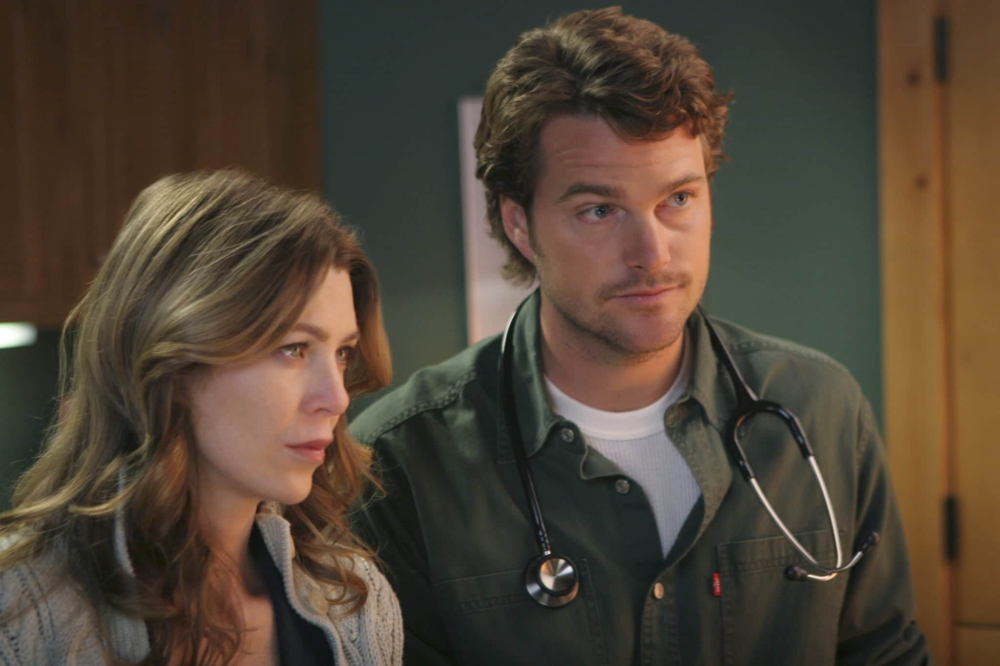
Mesmo que não fossem perdidamente apaixonados, a química era inegável,
e a ideia de "apenas uma noite" encheu nossa mente de possibilidades.
Grey's Anatomy
Melhores ships da série
Alex e Ava/Rebecca
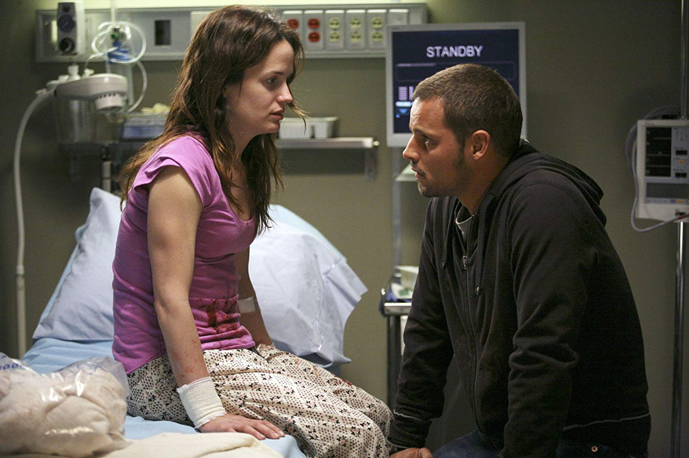
Ok, um casal cheio de complicações e que provavelmente não teria dado certo caso Karev quisesse continuar,
mas a gente torceu um pouquinho para que funcionasse.
Callie e Erica
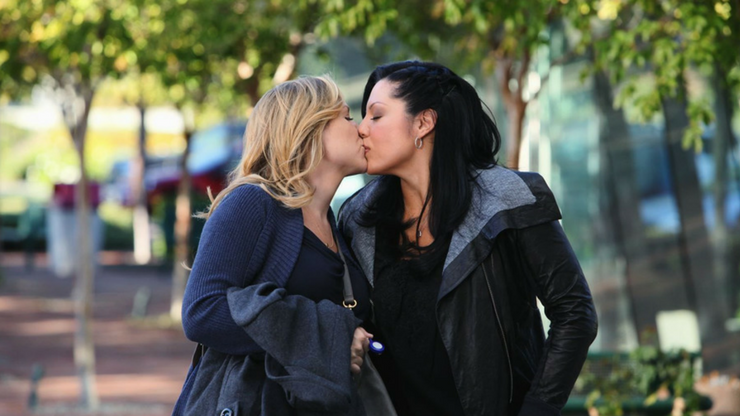
Ambas suscitaram uma discussão interessante sobre aceitação da sexualidade.
Apesar de não terem dado certo, pelo menos renderam um ponto importante para a série.
Richard e Adele
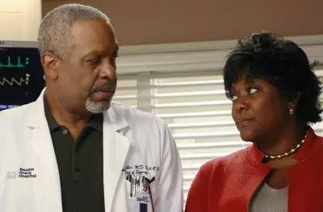
Um casal lindo que teve um desfecho extremamente triste.
Mesmo assim, nós pudemos aproveitar a interação deles por um tempo.
Owen e Teddy
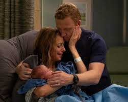
Mostraram na prática que só amor não faz um relacionamento dar certo. Ensinamentos!
Richard e catherine
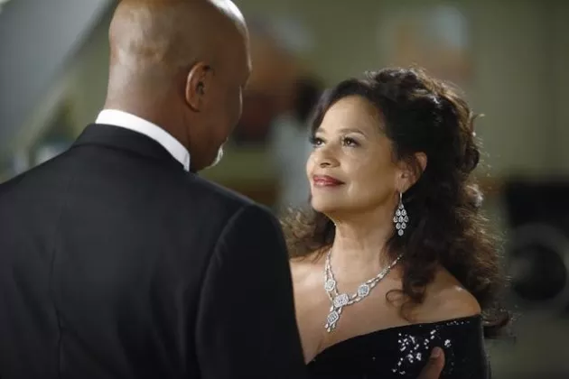
Personagens com personalidades tão fortes e conflitantes
que surpreendem por terem ficado tanto tempo juntos.
Levi e Nico

Não deram certo, ok.
Mas ninguém vai ser capaz de esquecer aquele primeiro beijo do lendário casal Schmico.
Amelia e Owen
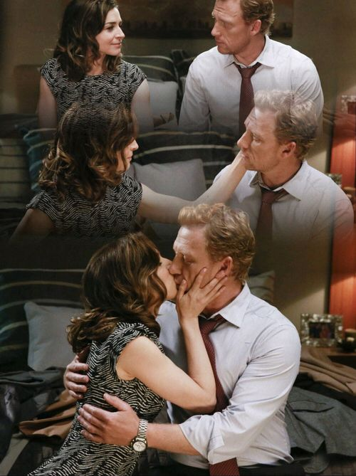
Entre idas e vindas, acabaram se tornando um dos casais mais marcantes
pela urgência que sentiam de estar um com o outro, mesmo quando isso fazia mal.
Teddy e Tom
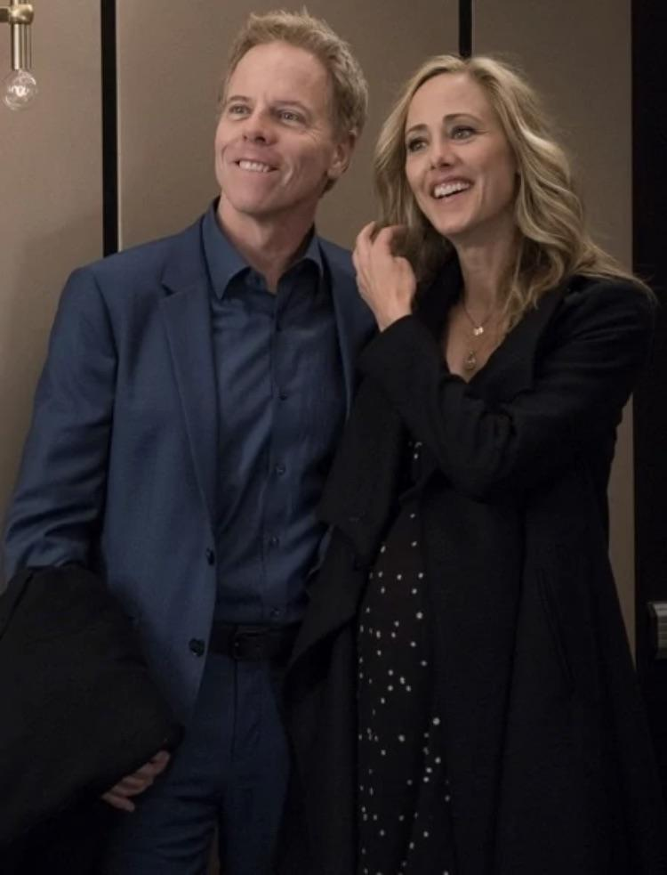
Koracick era o concorrente direto de Owen quando se tratava de Teddy,
e nós temos que deixar clara aqui a nossa torcida por ele.
Owen e Cristina
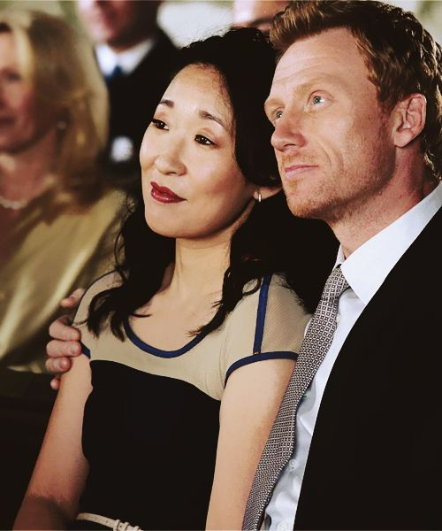
Um caso que só a distância conseguiu separar,
mas valeu a pena ver o relacionamento deles por um bom tempo.
Teddy e Henry
Acabou dando tudo completamente errado,
mas foi interessante ver o relacionamento desses dois gênios da cardiologia.
Bailey e Ben
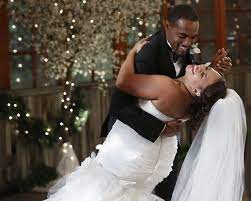
Provando por a+b que o casamento não acaba
com a química de um casal quando ela é forte o suficiente.
Meredith e DeLuca
Para muitos, pode parecer repentino,
mas depois ficou claro que tudo isso não podia deixar de acontecer.
Izzie e Denny
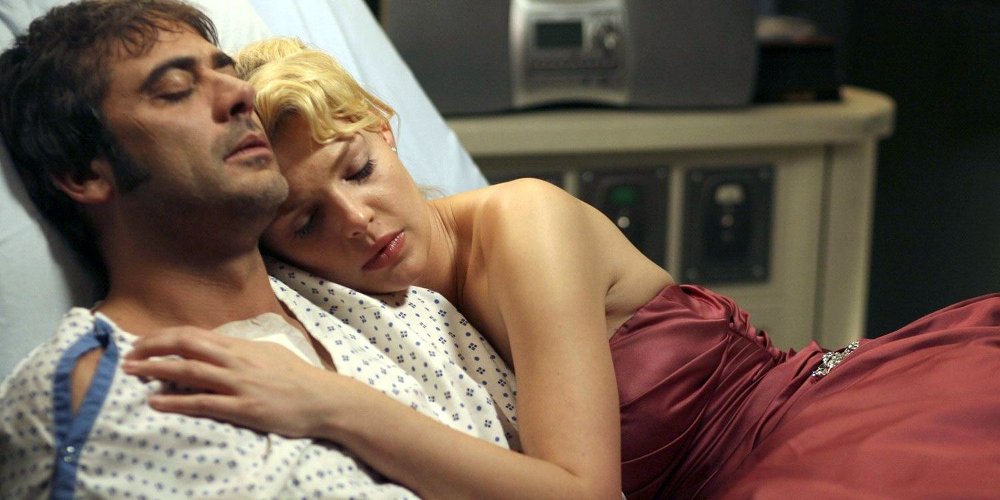
Não tinha como dar certo por muito tempo,
mas Izzie decidiu arriscar mesmo assim.
Valeu a pena enquanto durou.
Callie e Arizona
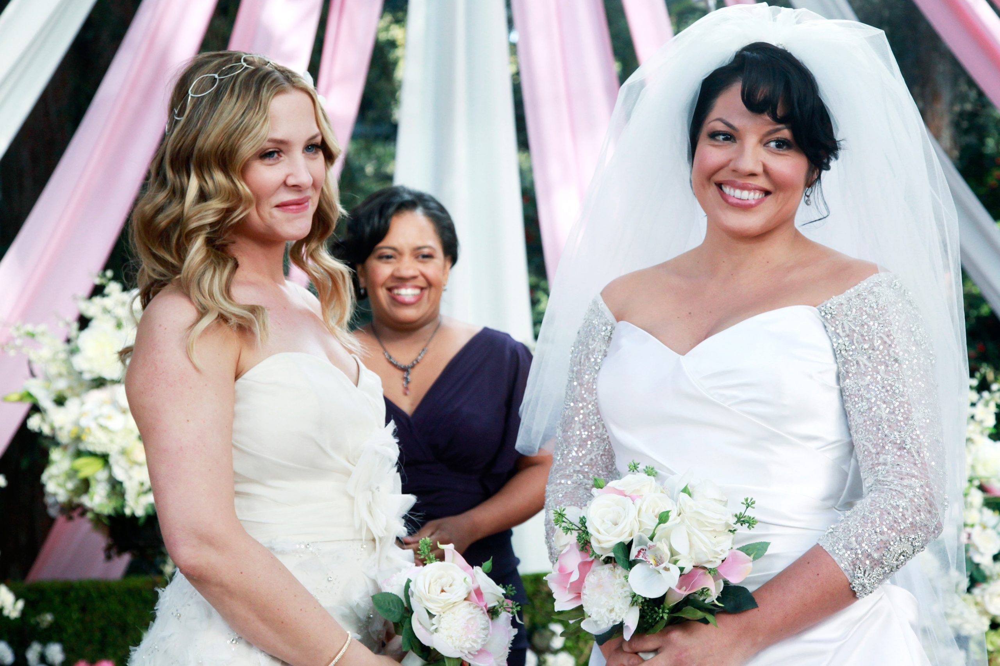
Acabou com um término complicado e uma briga por custódia,
mas Calzona sempre vai ter um lugar especial em nossos corações.
Jackson e April
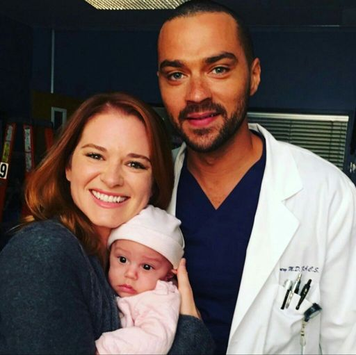
Tudo começou de uma forma calma,
e ninguém esperava que as coisas tomassem proporções tão grandes e desastrosas.
Foi um casal... intenso, digamos assim.
Link e Amelia
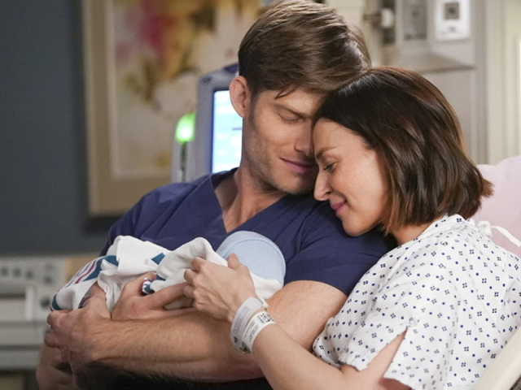
Um show de equilíbrio:
romance e tensão sexual na quantidade ideal.
A gente não conseguia parar de sorrir com a interação desses dois!
Lexie e Mark
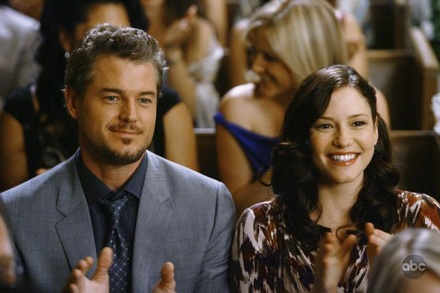
Importante lembrar: se você ama alguém, fale!
Não deixe para depois, pois ele pode nunca chegar.
Meredith e Derek
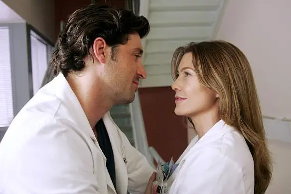
Talvez o casal mais memorável, já que durou por tanto tempo.
Mesmo com o final que teve, a gente nunca vai ser capaz de esquecer.
Meredith e Cristina
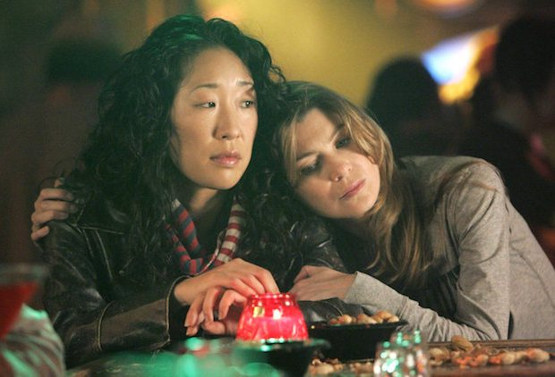
Ok, elas não são um casal romântico,
mas nenhuma dupla jamais será capaz de destronar essa aqui.
Superam todo e qualquer outro casal já mostrado na série!